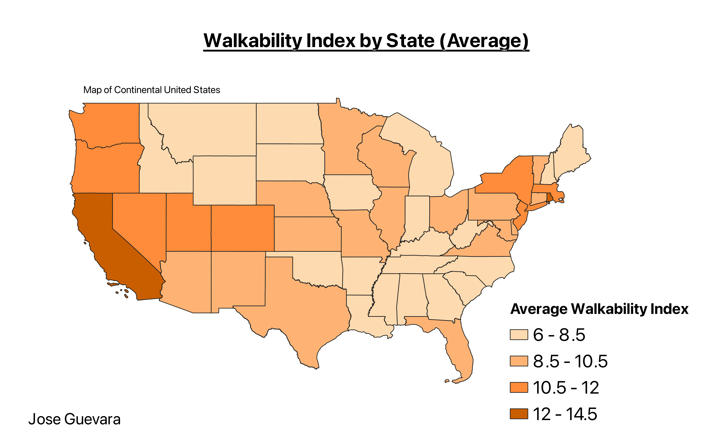

homework 7
Jose Guevara Hernandez

Click on the image to access the interactive map!
I created a choropleth map visualizing the average walkability index of each state in the US, using data sourced from the U.S. Environmental Protection Agency. My primary aim was to discern patterns in walkability across the country, providing a visual representation of which states are, on average, more walkable. It is important to note that the walkability index ranges from 1 to 20, with 1 indicating the least walkable environments and 20 signifying the most walkable areas.
The average walkability score is around 10.5
Data used for this project
raw CSV dataset
cleaned CSV dataset
link to CSV dataset source
Link to GeoJSON